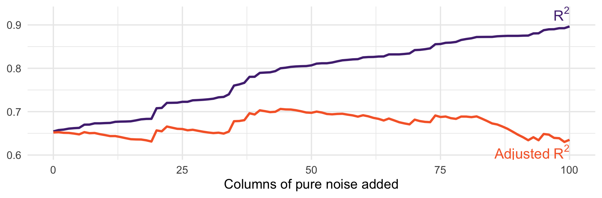
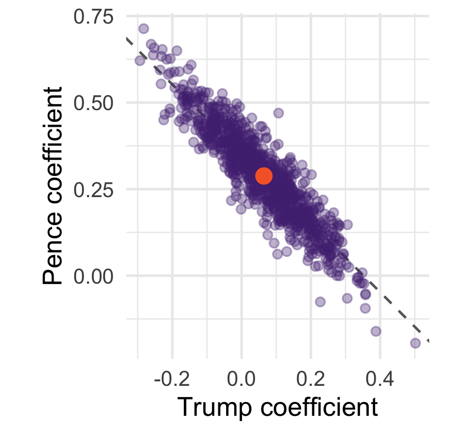

lgdp
7.202802 lgdp
4.630775 What “controlling for” actually means
We can fit one predictor and attach uncertainty to it
But the CEF we actually want conditions on several things at once
Today: how that works, why it matters, and what it means to “control” for something.
\[Y_i = \beta_0 + \beta_1 X_{1i} + \beta_2 X_{2i} + \cdots + \beta_k X_{ki} + \varepsilon_i\]
Same least squares criterion, more unknowns
Each \(\beta_j\) is a partial derivative: \(\partial Y / \partial X_j\), with the other predictors held fixed
Geometrically: a plane instead of a line, then a hyperplane
Life expectancy on log GDP, alone and then adding continent:
lgdp
7.202802 lgdp
4.630775 The slope fell from 7.20 to 4.63
Part of what looked like an income effect was continent: African countries are both poorer on average and lower in life expectancy for reasons beyond income
That is confounding
You can often reason about the bias before you have the variable. Omitting \(Z\) leaves
\[\hat{\beta}_1 \;\to\; \beta_1 \;+\; \underbrace{\beta_Z}_{\text{effect of } Z \text{ on } Y} \times \underbrace{\delta}_{\text{how } Z \text{ moves with } X}\]
| \(Z\) affects \(Y\) | \(Z\) correlated with \(X\) | Bias in \(\hat{\beta}_1\) |
|---|---|---|
| \(+\) | \(+\) | upward |
| \(+\) | \(-\) | downward |
| \(-\) | \(+\) | downward |
| \(-\) | \(-\) | upward |
Our case: being in Africa lowers life expectancy and is associated with lower income. Two negatives → upward bias. And indeed 7.20 fell to 4.63 once we controlled for it.
You can sign the bias from theory alone, with no data on \(Z\)
That tells you whether your estimate is a lower bound or an upper bound on the truth
“X would push this estimate further from zero” is a real, if imperfect, argument
That said, if it’s possible to measure (or otherwise account for), do so!
\(\beta_1\) is the relationship between \(X_1\) and \(Y\) among observations with the same values of the other predictors
Mechanically: strip from \(X_1\) everything predictable from the other variables, then relate what remains to \(Y\)
It is a comparison within strata of the controls
It does not mean you have intervened on anything. You compared cases that happened to be similar. Whether that allows a causal claim is a question about your design.
Step 2 slides countries sideways only, until every continent’s average log GDP matches the overall average. The slope goes from 7.20 to 4.63: already the multiple regression slope.
Step 3 slides them up and down only. The line does not move. The points close in on it: the typical miss falls from 11.3 to 5.8 years.
So the coefficient comes from removing continent from log GDP. Removing it from life expectancy cuts the noise, which is what shrinks the standard error.
resid_x
4.630775 Identical. Multiple regression is simple regression on the parts of \(Y\) and \(X_1\) that the controls cannot explain. That is all “holding constant” means.
Estimate Std. Error t value Pr(>|t|)
(Intercept) 20.14 4.03 4.99 0
lgdp 4.63 0.53 8.78 0
continentAmericas 11.69 1.65 7.07 0
continentAsia 10.11 1.48 6.85 0
continentEurope 11.27 1.89 5.95 0
continentOceania 12.93 4.52 2.86 0lgdp: within a continent, doubling income buys about \(4.63 \times \ln 2 \approx 3.2\) years
The continent terms are contrasts against Africa, the omitted baseline
Americas, Asia, Europe, Oceania all sit 10–13 years above Africa at the same income
Those continent rows were contrasts against Africa. Make Europe the baseline instead:
Estimate Std. Error t value Pr(>|t|)
(Intercept) 31.41 5.38 5.84 0.00
lgdp 4.63 0.53 8.78 0.00
continentAfrica -11.27 1.89 -5.95 0.00
continentAmericas 0.43 1.68 0.25 0.80
continentAsia -1.15 1.63 -0.71 0.48
continentOceania 1.66 4.33 0.38 0.70With Africa as the baseline, all four continent terms were significant. With Europe, only Africa is.
Same model, different significance. Each \(t\)-test asks whether one continent differs from the baseline. You get to decide the baseline
Fit the model with and without continent, and test one against the other:
Wald test
Model 1: lifeExp ~ lgdp
Model 2: lifeExp ~ lgdp + continent
Res.Df Df F Pr(>F)
1 140
2 136 4 12.009 2.188e-08 ***
---
Signif. codes: 0 '***' 0.001 '**' 0.01 '*' 0.05 '.' 0.1 ' ' 1\(F\) is the many-coefficient version of a \(t\)-test: are the four estimates, taken together, farther from zero than their noise explains?
\(H_0\): all four continent coefficients are zero. \(F\) = 12.0, \(p < 0.001\), with any baseline
vcov = works as in coeftest(): robust here, vcovCL() for clustered data. anova(m_gdp, m_cont) gives the classical \(F\) (16.5), which assumes constant variance.
With one coefficient, \(F = t^2\) and the \(p\)-values match. Log GDP alone: \(t^2\) = 265.2 and \(F\) = 265.2. Nothing new.
The \(F\) at the bottom of every summary(lm()) tests all the slopes against an intercept-only model. It is nearly always rejected, so it rarely tells you anything.
We will see joint tests again next semester: balance checks in experiments, instrument strength, pre-treatment trends
Two totals of squared misses:
Total sum of squares, \(TSS = \displaystyle\sum_{i=1}^{n} (Y_i - \bar{Y})^2\): the miss from guessing \(\bar{Y}\) for everyone, using no predictors
Residual sum of squares, \(RSS = \displaystyle\sum_{i=1}^{n} (Y_i - \hat{Y}_i)^2\): the miss left after guessing with the fitted model (the \(SSE\) from earlier)
\[R^2 = 1 - \frac{RSS}{TSS}\]
The share of the squared error that the predictors remove, just as with the group means earlier. With an intercept, it runs from 0 to 1.
[1] 0.654449\(TSS\) depends only on the data. Every model of lifeExp shares it.
Only \(RSS\) depends on which predictors you include
Adding a predictor can never raise \(RSS\): least squares could always set its coefficient to zero and keep the old fit
[1] 0.654449[1] 0.657564A column of pure noise raised \(R^2\)
Not by luck: an added column can never raise \(RSS\), so \(R^2\) can never fall
# Add 0, 1, ..., 100 columns of random noise to lifeExp ~ lgdp and record both R^2s
set.seed(8410)
noise <- matrix(rnorm(nrow(g07) * 100), nrow = nrow(g07))
fits <- map_dfr(0:100, function(k) {
X <- cbind(g07$lgdp, noise[, seq_len(k)]) # log GDP plus the first k noise columns
m <- lm(g07$lifeExp ~ X)
tibble(k = k, r2 = summary(m)$r.squared, adj_r2 = summary(m)$adj.r.squared)
})
ggplot(fits, aes(k)) +
geom_line(aes(y = r2), color = "#522D80", linewidth = 1.3) +
geom_line(aes(y = adj_r2), color = "#F66733", linewidth = 1.3) +
annotate("text", x = 100, y = fits$r2[101] + 0.03, label = "R^2", parse = TRUE,
color = "#522D80", size = 6, hjust = 1) +
annotate("text", x = 100, y = fits$adj_r2[101] - 0.03, label = "Adjusted~R^2", parse = TRUE,
color = "#F66733", size = 6, hjust = 1) +
labs(x = "Columns of pure noise added", y = NULL) +
theme_minimal(base_size = 16)
100 columns of noise take \(R^2\) from 0.65 to 0.90
Adjusted \(R^2\) charges for each added column. That helps a little, but noise still pushed it up to 0.71.
So \(R^2\) cannot choose a model. Never justify including a variable because it raised \(R^2\).
If two predictors are strongly related, the data struggle to tell their effects apart
Coefficients get large standard errors and become unstable across specifications
Recall the SE formula: the denominator is the variation in \(X_j\) left over after the other predictors
Perfect collinearity makes the model unfittable. R silently drops a variable and reports NA.
The variance inflation factor asks how much a coefficient’s variance is inflated by its overlap with the other predictors:
\[VIF_j = \frac{1}{1 - R_j^{2}}\]
where \(R_j^2\) comes from regressing \(X_j\) on all the other predictors.
Feelings toward Trump and toward Pence move together. Use both to predict feelings toward the police:
[1] 0.8775053ft_trump ft_pence
4.348119 4.348119 Each standard error should be about 2.09 times larger than if the two were unrelated: the square root of VIF
Check: adding Pence multiplies Trump’s standard error by 2.03
With 7,264 respondents, both are still estimated precisely. A big sample can afford the loss.
Now suppose you had run only a pilot survey of 100 people:
Estimate Std. Error t value Pr(>|t|)
(Intercept) 59.593 3.032 19.656 0
ft_trump 0.284 0.056 5.080 0 Estimate Std. Error t value Pr(>|t|)
(Intercept) 53.618 3.311 16.193 0.000
ft_trump -0.167 0.136 -1.228 0.222
ft_pence 0.519 0.145 3.592 0.001Alone, warmth toward Trump predicts warmth toward the police
Add Pence, and the Trump coefficient turns negative and insignificant
A finding about Trump, or one unlucky draw? Run a thousand pilots and see.
# Draw 1,000 pilots of 100 respondents and keep both slopes from each
set.seed(8410)
pilots <- map_dfr(1:1000, function(i) {
b <- coef(lm(ft_police ~ ft_trump + ft_pence, data = slice_sample(anes, n = 100)))
tibble(trump = b["ft_trump"], pence = b["ft_pence"])
})
full <- coef(m_tp) # the answer from all respondents
ggplot(pilots, aes(trump, pence)) +
# dashed line: every pair whose two slopes add up to the full-sample total
geom_abline(intercept = full["ft_trump"] + full["ft_pence"], slope = -1,
linetype = "dashed", color = "grey40") +
geom_point(alpha = .35, color = "#522D80") +
annotate("point", x = full["ft_trump"], y = full["ft_pence"], color = "#F66733", size = 5) +
coord_equal() +
labs(x = "Trump coefficient", y = "Pence coefficient") +
theme_minimal(base_size = 20)
Each dot is one pilot. Orange: all 7,264 respondents.
Across the middle 95% of pilots, Trump’s coefficient runs from -0.17 to 0.28. It is negative in 32% of them.
But the dots hug the dashed line, where the two add to 0.35. Their sum stays between 0.25 and 0.45.
The data know how much Trump and Pence matter together, not how to split it
Collinearity is not a violated assumption. The cloud is centered on the full-sample answer: OLS is still unbiased, just imprecise.
Your data cannot separate these two things
In this case, it’s probably justifiable to not include FT_Pence, since he was Trump’s VP!
Adding controls feels like rigor.
As we saw earlier, controlling for a collider creates bias where none existed
And controlling for a variable that is a consequence of your treatment removes part of the effect you wanted
There is no specification that is “safe by default.” Which one is right is a theory question, not a statistical one. A later session is devoted to this.
Regress ft_police on ft_science. Then add votechoice. What happens, and why?
Reproduce the multiple-regression coefficient using the two-residual trick.
Add ft_fauci as well. What happens to the standard errors, and what does that suggest?
Compare \(R^2\) and adjusted \(R^2\) across your three models. Which is the honest comparison?
Read: Gelman, Hill and Vehtari, Ch. 11
Next class: the matrix form of least squares